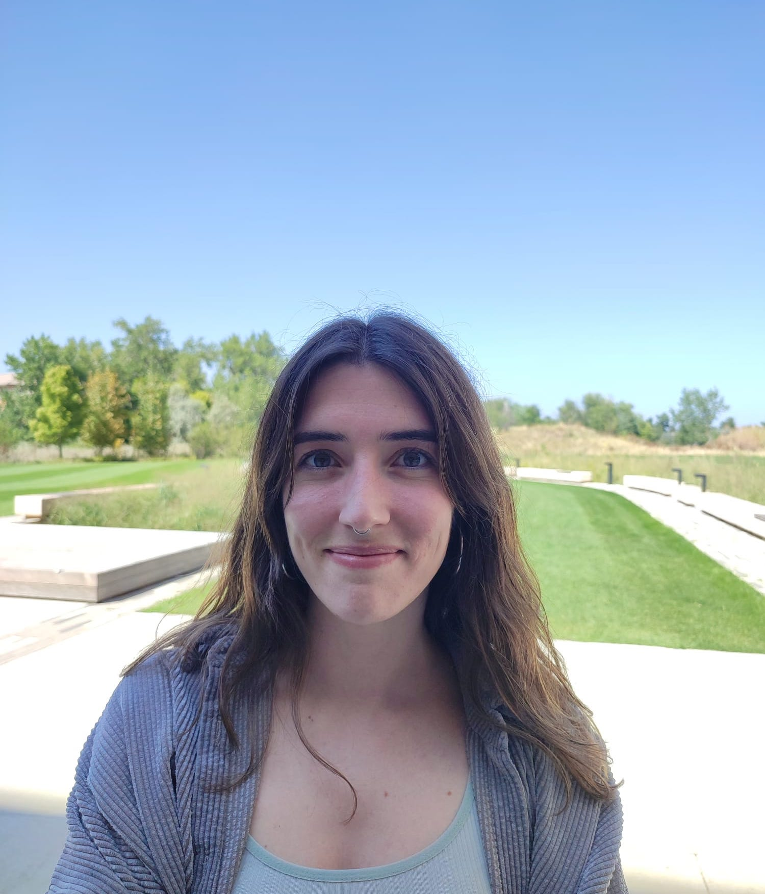

What I'm doing this season
JAS submission on square root filters for cislunar angles-only relative orbit estimation. Conference version presented at AAS/AIAA Boston, August 2025.
AMOS 2026 paper on observability considerations for cislunar angles-only relative navigation. Joint with J. Kulik (Utah).
Building out the adaptive Gaussian mixture filtering side of the thesis. Defense targeted for Spring/Summer 2027.
What I work on
My dissertation develops observability-informed adaptive Gaussian mixture filtering for cislunar relative navigation using only line-of-sight measurements. The setup is hard for three reasons: range is instantaneously unobservable from bearings, the CR3BP dynamics turn Gaussians into bananas, and observability is geometry- and time-varying. I work on Lie-derivative and empirical Gramian observability analyses, square-root unscented filters, and adaptive mixture management that knows when its weights are lying to it.
Pick of the litter
Teaching, service, & the rest
Teaching
- TA, ASEN 6014 Formation Flying Fall 2025
- Undergrad research mentor (DLA) 2024–2025
Service
- Chair, Aerospace Graduate Student Org (AGSO) 2023–2025 (member 2021–2025)
- Co-founder & organizer, CCAR Student Seminar Sep 2022–present
- Smead Graduate Committee, student rep ~2022–2025
Awards
- NASA FINESST 2023–2026
- Amelia Earhart Fellowship (Zonta Intl.) 2024
Off-clock
- Native Galician & Spanish
- Lived in Madrid, Liège, Noordwijk, Boulder
- Recovering ESA Concurrent Design facility user